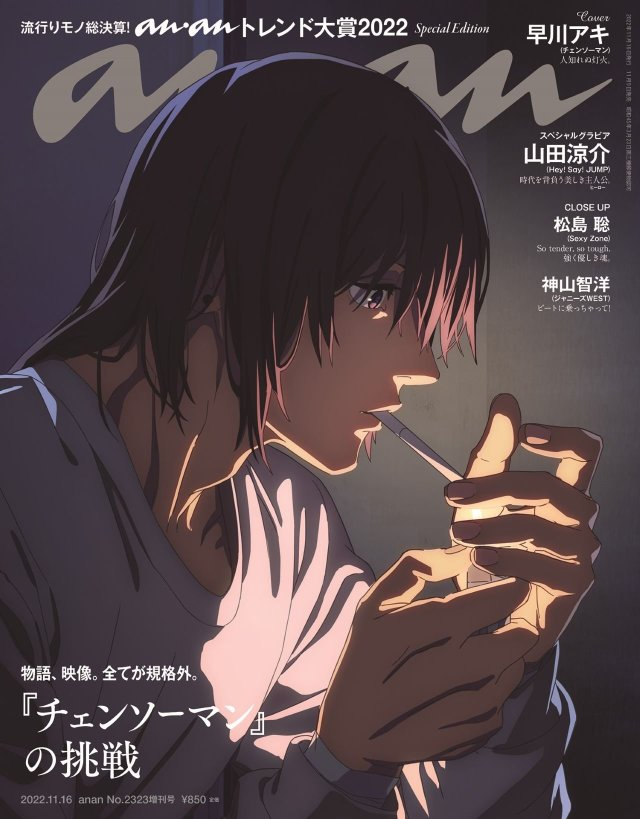

我的動漫日記
《我的英雄學院》（日語：僕のヒーローアカデミア Boku no Hīrō Akademia）是日本漫畫家堀越耕平創作的一部現代社會背景下英雄題材少年漫畫，該作於2014年在日本漫畫雜誌《週刊少年Jump》（集英社）32期起連載， 其後被改編為各種系列的衍生作品，主要包括同名的動畫、電影、小說和電子遊戲等周邊媒體產品。

早川秋
東京公安對魔特異4課的惡魔獵人，腦後梳有髮髻，隨身攜帶的武器是武士刀。 瑪奇瑪的忠實部下，比電次多三年經驗的前輩。曾是狐狸惡魔與詛咒惡魔的契約者；在黑道槍擊事件之後，與狐狸惡魔的契約失效，成為未來惡魔的契約者。
後藤一里
極度怕生又陰鬱的高中一年級生。擔任着結束樂隊的主音吉他。 雖然陰鬱但也憧憬着看起來閃閃發光的樂隊活動，因此開始彈吉他。 雖然技術高超，但在樂隊或公共場合中無法發揮得很好。開口前一定會加上一聲「啊…」。